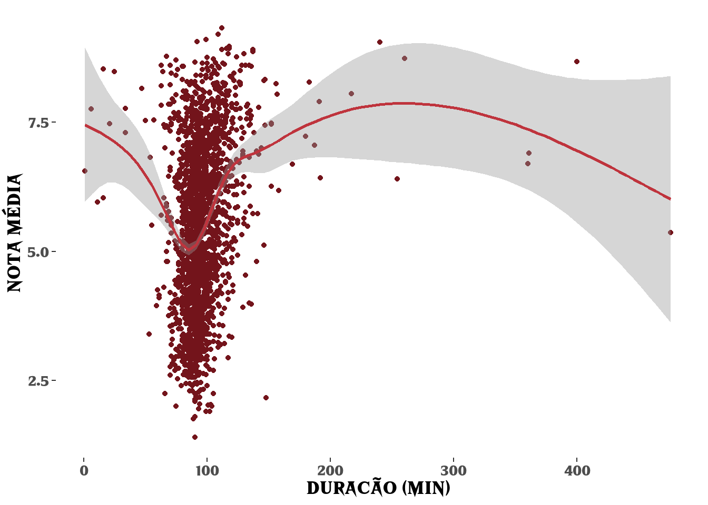

Análise de filmes de terror
Introdução
Dia 31 de outubro marca a data comemorativa do Halloween, festa para recordação e celebração dos mortos e das almas penadas. Que tal aproveitar essa companhia do além para maratonar ou conhecer novos filmes de terror? Então coloque uma música de suspense, apague as luzes e vem comigo!

Análise e dados
Essa análise tem como objetivo te auxiliar na escolha de um filme de terror no meio desse mar de entretenimento disponível. Para isso, utilizaremos a base Number Party Massacre Ranked List, criada pelo usuário do reddit u/ryno731 e que compila mais de 2000 filmes de terror separados por diretores, ano de lançamento, subgêneros e notas médias em sites de crítica. Para algumas análises, utilizaremos também a base de dados do IMDB, disponível em: https://datasets.imdbws.com.
Diretores
O que são diretores? O que comem? Onde vivem? Bom, você provavelmente já ouviu falar de Zé do Caixão, John Carpinter, Hitchcook ou as irmãs Wachowski. Elas são responsáveis por toda a visão criativa do filme, desde a escalação dos atores e atrizes, até a filmagem e a pós produção. Especialmente no gênero de terror, os diretores são figuras marcantes da cabeça dos fãs e muitas vezes acabam sendo mais influentes que o próprio elenco. Portanto, podemos iniciar nossa análise verificando quais diretores possuem melhores notas médias.
Levando em conta diretores com pelo menos dois filmes, Fritz Lang aparece com melhores médias, seguido por Hitchcock e Kubrick. Fritz Lang foi um diretor de cinema austríaco responsável por filmes como Metrópolis (1927) e M, o vampiro de Dusseldorf (1931). Já Hitcock é conhecido pelo filme Pscicose (1960) e Kubrick dirigiu filmes como The Shinning (1980) e Laranja Mecância (1971).
Um fato em comum entre eles é que a média do ano de lançamento de seus filmes, identificado pela etiqueta ao lado direito, é anterior a década de 80. Podemos identificar os diretores mais recentes considerando apenas os filmes lançados após os anos 2000.
Nesse recorte temporal, Henry Selick, John Krasinski (sim, o Jim de The Office) e Jordan Peele aparecem no top 3. Selick foi responsável por duas das maiores animações do gênero terror: O Estranho mundo de Jack (1993) e Coraline (2009), adaptação do livro de Neil Gaiman.
Podemos unir os 5 diretores de cada período para visualizar melhor a variação das notas de seus filmes.
Visualizando o boxplot desses 10 diretores, percebemos que Fritz Lang é o diretor mais consistente, com mediana acima dos outros e pouca variação de nota entre seus filmes. Já Hitchock possui uma variação bem maior, com filmes tendo notas superiores a 9 e outros com notas proximas a 8.
Entre os diretores mais recentes, Henry Selick parece ser uma boa escolha, uma vez que seus filmes também apresentam médias altas e pouca variação. Além dele, Jordan Peele, diretor de Get Out (2007) e Us (2019), e Jennifer Kent, diretora de Babadook (2014), são ótimas escolhas para um horror mais recente.
A tabela a seguir apresenta o filme mais bem avaliado de cada um dos 10 diretores.
| Titulo | Diretor | Ano | Duracao | Media |
|---|---|---|---|---|
| M | Fritz Lang | 1931 | 99 | 91.0 |
| Rear Window | Alfred Hitchcock | 1954 | 112 | 93.2 |
| A Clockwork Orange | Stanley Kubrick | 1971 | 136 | 85.8 |
| Bride of Frankenstein | James Whale | 1935 | 75 | 87.0 |
| Jaws | Steven Spielberg | 1975 | 124 | 87.6 |
| The Nightmare Before Christmas | Henry Selick | 1993 | 76 | 85.2 |
| A Quiet Place | John Krasinski | 2018 | 90 | 82.8 |
| Get Out | Jordan Peele | 2017 | 104 | 85.8 |
| Ex-Machina | Alex Garland | 2014 | 108 | 82.6 |
| The Babadook | Jennifer Kent | 2014 | 94 | 79.6 |

Além da lingua inglesa
Ao avaliarmos nossas base de dados agrupada por continente, notamos que aproximadamente 90% dos dados são referentes a filmes produzidos na América do Norte ou Europa.
Vamos explorar um pouco os paises fora desse eixo.
Dentre os paises selecionados, o Japão é o que possui mais filmes em nossa base, seguido pela Coréia do Sul e do México. Em relação as médias, os filmes sul-coreanos e japoneses parecem ser uma boa escolha para explorar o gênero. Por fim, podemos identificar quais são os filmes mais bem avaliados em cada um desses paises.
| Título | Ano | Pais | Duração | Média |
|---|---|---|---|---|
| Terrified | 2018 | Argentina | 87 | 69.25 |
| Good Manners | 2017 | Brazil | 135 | 75.60 |
| Mr. Vampire (Geung-Si Sin Sang) | 1985 | Hong Kong | 96 | 78.00 |
| Tumbbad | 2018 | India | 104 | 84.25 |
| Impetigore (Perempuan Tanah Janaham) | 2019 | Indonesia | 106 | 77.00 |
| One Cut of the Dead | 2019 | Japan | 96 | 85.20 |
| Pan’s Labyrinth | 2006 | Mexico | 118 | 89.60 |
| What We Do in the Shadows | 2014 | New Zealand | 86 | 82.20 |
| Memories of Murder (Salinui Chueok) | 2003 | South Korea | 131 | 86.00 |
| Shutter | 2004 | Thailand | 97 | 68.00 |
Subgêneros
Agora que já definimos alguns diretores para ficarmos de olho, podemos analisar quais subgêneros de terror são mais comuns e quais possuem melhores notas.
O gênero de Slasher é o mais comum em nossa base de dados, seguido de Ficção Cientifica e Comedia. Apesar disso, filmes desses gêneros não parecem ser os mais aprovados do público em geral. Uma possivel explicação para esse fenômeno seria a grande quantidade de filmes produzidos que se encaixam nesses subgêneros mas não foram bem avaliados. Podemos hipotetizar também que filmes do gênero Mudo, Preto e Branco e Giallo possuem um nicho menor e por isso são assistidos apenas por pessoas que já possuem interesse.
Podemos tentar cruzar os nossos dados com a base do IMDB e verificar quantos votos os filmes desse gênero possuem.
Levando em consideração o número de votos médios por filme, o subgênero Meta, ou seja, filmes que referenciam o próprio gênero de terror, parece ser bem mais engajantes que os outros subgêneros.
Duração
Com diretores e gêneros explorados, podemos verificar agora qual seria a duração ideal para o filme que vamos escolher.
Explorando a quantidade de filmes com cada duração, notamos que segue uma distribuição normal, onde a grande maioria dos valores estão próximo ao centro, com duração média de 96 minutos.
Será que o aumento ou diminuição da duração influencia na nota média do filme?

A correlação entre duração e nota média parece ser bastante baixa, uma vez que a maior parte dos dados se concentram próximo a 100 minutos e a nota média também. Iremos assumir que a duração do filme não é tão relevante para sua avaliação.
Jumpscare

Por fim, podemos avaliar a quantidade de Jumpscares que os filmes possuem. O termo “Jumpscare” não tem uma tradução exata para português mas podemos entender como aqueles momentos em que o filme te faz pulae de susto. Esse artificio gera um pouco de divisão, tendo pessoas que gostam bastante e outras que evitam ao máximo. Vamos explorar um pouco a distribuição de filmes em relação a esse fator.
Como o histograma está deslocado para a esquerda, podemos afirmar que a maioria dos filmes possuem poucos sustos (entre 0 e 10). É possivel verificar também se existe alguma relação entre a nota dada ao filme e a quantidade de sustos.
Portanto, as pessoas parecem preferir filmes com menor quantidade de sustos. É importante ressaltar que a base é relativamente pequena e a quantidade de filmes com muitos sustos é ainda menor, assim, seriam necessários mais dados para afirmarmos se essa relação esta realmente correta.
Por fim, podemos verificar quais subgêneros possuem mais ou menos sustos.
Assim, caso goste de tomar sustos, os filmes envolvendo espíritos, monstros e palhaços são um prato cheio. Já se tiver problemas cardiacos, é uma boa opção buscar filmes do gênero Preto e Branco, Crime ou Vingança.
Juntando tudo
Agora que exploramos todas as categorias, podemos finalizar nossa análise unindo o melhor de cada tópico em uma listinha de recomendações. A tabela a seguir apresenta um compilado dos 30 melhores diretores, sendo 10 do século 20 , 10 posteriores ou lançados nos anos 2000 e 10 fora do eixo Norte América e Europa. Além disso, os filmes também foram classificados em relação aos subgêneros, duração e quantidade de sustos.
Conclusão
A partir da análise realizada, foi possivel notar que o gênero terror é extremamente variado, tanto em relação a diretores, quanto em relação a subgêneros. Além disso, constatou-se que existe uma vasta produção de filmes de alta qualidade além dos produzidos nos paises anglo-saxônicos, principalmente na Ásia e América Latina.
Espero que tenha gostado e qualquer dúvida, sugestão ou crítica, fique a vontade para me chamar no twitter @crls_h! Beijos e bons sustos!